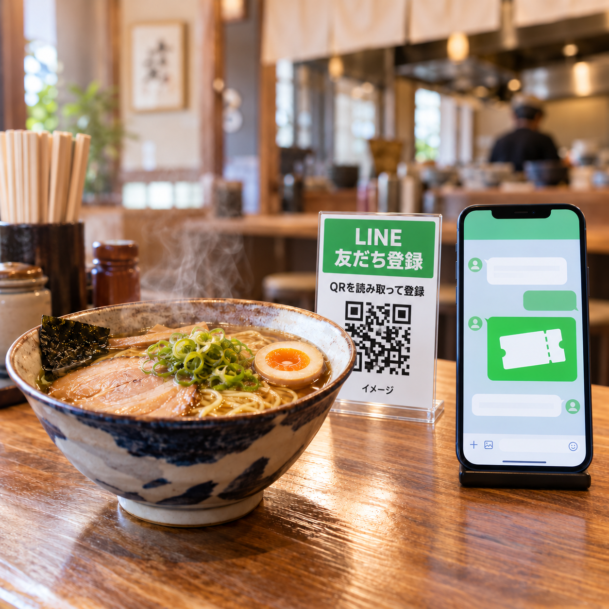
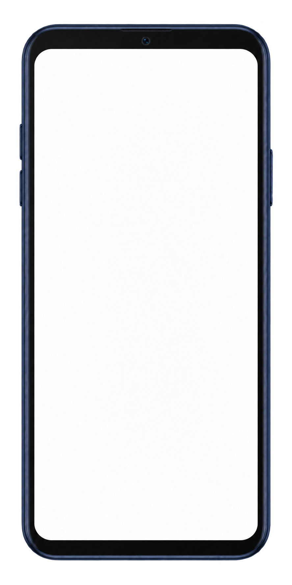

公式LINEの設計・構築
お客様との接点になる公式LINEと、使いやすいリッチメニューを設計。これから始めるお店もご相談いただけます。
飲食店のための LINEリピート集客
公式LINEの設計・構築から、
クーポンと配信の仕組みづくりまで。
来店後のご案内は、設定に合わせて自動で。
毎回、配信文やタイミングを考える手間を減らし、
次の「また行こう」をつくります。

サービスの活用イメージです。画像内のQRコードは説明用サンプルです。
こんなお悩みはありませんか？
接客や仕込みを終えてから、配信文を考える。
その負担が、LINEを続けにくくしていませんか。
また来てほしくても、ご案内を届ける手段がない。
何を、いつ届ければいいのか決められない。
一人ひとりへのフォローまで時間が取れない。
その「来店のあと」を、
LINEとクーポンの仕組みで支えます。
HOW IT WORKS
来店のたびに、次のクーポンへ。
お客様の利用状況に合わせて、ご案内を切り替えます。
来店時に登録をご案内。登録直後にあいさつと初回クーポンを届け、次につながる接点をつくります。
登録と初回特典はセット初回クーポンを利用したら、次の特典をご案内。おーぶの例では、選べる丼メニューを届けます。
初回特典を利用 → 次へ次回特典を利用すると、さらに次のご案内へ。おーぶの例では、丼の次にラーメン半額の特典が届きます。
使うたび、次の特典へその先は「無限クーポン」の仕組みへ。おーぶの例では、麺大盛りまたは煮卵の特典を繰り返しご案内します。
継続して再来店を後押し登録から、その後のフォローまで
おーぶの配信設計をもとにした例です。
スタッフが「登録をご案内」「利用済みにする」。その後の配信は自動で進みます。
卓上POPをご案内。お客様がQRを読み取り、LINEの友だちに。
あいさつと「餃子またはから揚げ」のクーポンが届きます。
特典のご利用を確認して操作。この操作が次の配信の起点です。
利用後にお礼を表示。次のクーポンは翌日の午前10時に届きます。
特典を届けた日から、丼・常連特典は15日後 → 23日後、ラーメン半額は14日後 → 22日後。午前10時に、ご来店のきっかけと期限前のご案内を届けます。
初回特典は登録から1時間。丼・ラーメン半額・常連特典は配信から30日後21:30まで。期限内に利用されない場合、次の特典へは進みません。特典の内容と配信タイミングは店舗ごとに設計します。下の携帯画面は、おーぶの特典画像を使った例です。
実際の配信をイメージしてみる
クーポンが届く、思い出す、また来店する。
携帯画面の下の01〜06で、届く内容を切り替えられます。
LINE登録直後にあいさつと初回特典をご案内する設計例です。
「おーぶ」の管理画面で確認した特典画像と配信の順序を使った操作デモです。管理画面で確認した特典と送信タイミングをもとに、配信文を説明用に整理しています。端末の表示と操作、料理映像は説明用イメージです。期限・利用条件は導入時に確認し、この画面のクーポンは実際のお店では利用できません。

特典画像をタップできます。以前のメッセージは画面内を上へスクロールして確認できます。
店舗スタッフが行うこと
LINE登録をご案内
初回来店のお客様に、登録をお声がけ。
クーポンの利用操作
来店時に、スタッフが利用済みの操作。
WHAT WE SUPPORT
何を、いつ届けるかを一緒に設計。
日々の配信を考える負担を減らします。
お客様との接点になる公式LINEと、使いやすいリッチメニューを設計。これから始めるお店もご相談いただけます。
登録後から再来店、その先までのクーポンを設計。利用状況に応じて、次の特典のご案内につなげます。
届ける内容とタイミングをあらかじめ設計。案内を毎回考える負担を減らし、継続した接点を持ちやすくします。
サービスやお店の魅力を伝える動画の活用も相談できます。制作の有無・本数はプランによって異なります。
プランに応じてご案内選べる導入スタイル
初期費用 0円
初回来店ではなく、2回目以降のクーポン利用による再来店を成果対象とする仕組みです。
初期費用 0円
定期契約で、仕組みを活用。
サブスク型での導入もご相談いただけます。サービス内容と契約条件は、個別にご案内します。
どちらのプランも初期費用は0円です。成果の定義・サービス内容・契約条件は、導入前にご説明します。動画制作の有無・本数はプランにより異なります。
今のお店に、どんな仕組みが合うか。
GET STARTED
現在のLINEの有無や店舗の規模、
実現したいことを伺います。
店舗がない方も相談できます。
フォームで「店舗なし」をお選びください。
業種・店舗の有無・店舗数・席数・LINEの運用状況・導入希望時期などをお伺いします。店舗数と席数は任意です。
ご希望の日時を確認し、日程をご案内します。フォーム送信時点では予約は確定しません。
お店に合わせた設計図を無料で作成し、成果報酬型・サブスク型の内容や条件と合わせてご説明します。設計図がお店に合わなければ、お断りいただいて構いません。内容をご確認いただいてから導入を検討できます。
FAQ
はい。これから公式LINEを作りたい方も、現在の運用を見直したい方もご相談いただけます。
来店時のクーポン利用に合わせて次のクーポンを発行し、再来店のきっかけを継続してつくる仕組みです。次の特典へ進むには期限内の利用が必要で、未使用のまま期限切れになると次の特典は届きません。具体的な特典や有効期限、配信内容は店舗に合わせて設計します。
成果報酬型は、2回目以降のクーポン利用による再来店を成果対象とする仕組みです。どちらのプランも初期費用は0円です。無料相談で店舗の状況を伺い、それぞれのサービス内容と契約条件をご案内します。
初回来店時のLINE登録のご案内と、クーポン利用時の確認・利用済みにする操作です。実際のご案内方法も、お店の運用に合わせて相談します。
動画制作の有無や本数はプランによって異なります。ご希望や用途を伺い、相談時にご案内します。
無料相談は店舗がない方もお申し込みいただけます。フォームで店舗の有無を選択してください。事業内容やLINEで実現したいことを伺い、対応できる内容をご案内します。
このページの申し込みは無料相談の受付です。内容を確認し、LINEで相談の日程を調整します。フォーム送信のみで予約や導入契約は確定しません。
集客プランナー
辻 秀作RE:LOOPこの仕組みに込めた思い
私自身、飲食店の経営と、全国チェーンでのマネージャーを経験してきました。日々の営業に追われるなかで、コストを抑えながら売上を伸ばし、お客様に喜ばれるお店をつくり続ける。その難しさを、現場で感じてきました。
RE:LOOPで目指しているのは、来店後のフォローを仕組みに任せ、接客や料理、お店づくりに時間を使える状態です。
お客様に届ける価値を高め、その積み重ねがお店の利益につながるように。現場での経験をもとに、一店舗ずつ状況に合わせて考えます。
また来たくなるお店を、
一緒につくりませんか。
お客様とのつながりを、次の来店へ。
お店に合わせた設計図を、無料で作成します。
公式LINEがお店の仕組みや営業スタイルに合うかどうかを一緒に考え、
まずは設計図で、導入後の流れをご確認いただけます。
「うちのお店には合わない」と感じたら、
お断りいただいて構いません。
まずはお気軽にご相談ください。